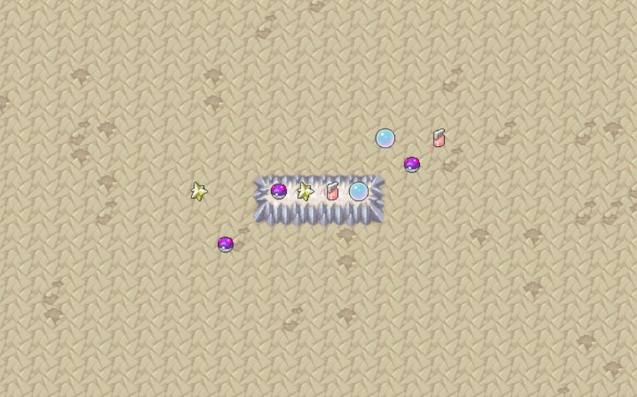

For the course 2D Game Engines, each of us are tasked with building a robust game engine from scratch using Java. With the help of only a GraphicsContext from JavaFX, all other elements—from UI nodes to collision systems—is written entirely from scratch.
The overall goal for the end of the class is to end up with an engine that is capable of powering multiple different games. As such, the engine design process was extremely important to maintain extensibility and a clear separation between engine and game code. This project is still in progress, but I'll continuously update this page with new projects as we complete them.

The first project we made was Tic-Tac-Toe, which was built alongside the our own UI toolkit. The application supports multiple screens, similar to JavaFX's stages, but the user can also opt to layer screens on top of each other. Another key aim of this project was responsiveness: when the user resizes the window, the game should resize its contents appropriately.
The whole graphics system runs on two main methods: draw, and tick. All tick does is to change properties of elements; for instance, a timer bar shrinks at the bottom of the Tic-Tac-Toe board, and each time tick is called, it shrinks its width accordingly based on how much time has passed since. Draw is called right after that, and it just takes that new property and draws it onscreen.
Beyond the engine itself, I wanted to code the game to be as customizable as possible. Players can decide which color they want to be, and the round circle buttons also grow as the user hovers over them, which is an affordance for "you can click me". The color change is also reflected in the large X and O onscreen. The player can also decide the size of the board and how many tiles in a row a player needs before winning. The < and > buttons also respond to context; for instance, the number to win can't be greater than the size of the board, so the > button becomes greyed out. The game also forbids any value less than 3 in a row.
My best friend and I quickly realized we could play Wuziqi with this, which is a traditional Chinese board game. The extensibility paid off!
Note: the screencaps are taken from two different games, which is why the colors/size don't match up.
The next project was Alchemy, which is when users drag sprites around a board to interact with other sprites. For instance, when water and earth meet, they merge into mud.
This project involved injecting the entity-component system design pattern into our engine. Every single element depicted on this screen is treated as a game object, and is made up of different component. For instance, the tiles and the items all have a sprite component, but only the items can be dragged. Note that the sprite graphics here were borrowed from Pokemon Mystery Dungeon.
All the game objects are then handled by various systems, such as one for graphics, and one for keeping time, and one for collisions. All of this is contained in a game world that manages these interactions and handle all the game objects together in one place.
Another new UI element introduced here was the concept of viewports: the screen can now be dragged and zoomed into, and the viewport automatically restricts panning and zooming movement to not display anything outside of the game world. Of course, all of this handles window resizing on top of viewport resizing. It was when implementing this feature when I decided to make entirely separate classes for mouse events that were in screen space, resized space, and game space. Everything the game world receives is only in game space coordinates, which makes mouse bounds testing much easier on that end.
As usual, engine asides, I did my best to make my life and my players' lives easier. I wrote a factory class that spits out items based on a few parameters, since they were virtually all treated the same beyond their identity. I also drew the map on a tile-based system, which has values based on what items currently occupy that space. When users drag and drop sprites, it snaps to its location on the grid if and only if that tile isn't currently occupied. This system will also presumably make merging sprites together and determining what they turn into much easier.
Several other affordances came into play here: the four icons on the platform are "master" sprites the user can drag to copy to an unoccupied tile. When they do so, a translucent copy of the icon actually follows their mouse, with the original untouched, implying that a copy is being made. However, when an ordinary object is dragged, the object itself follows the cursor, implying it is being physically moved. Of course, the platform itself and its surrounding tiles are marked as invalid areas to drag icons to.
This project is still a work in progress, as mentioned before. However, I'm really excited for where it's going, especially for the other games I'll be building with it! I've learned a lot from using this engine's design pattern, which is markedly different from the strict object-oriented principles I adhered to before. Here's to a fun semester.